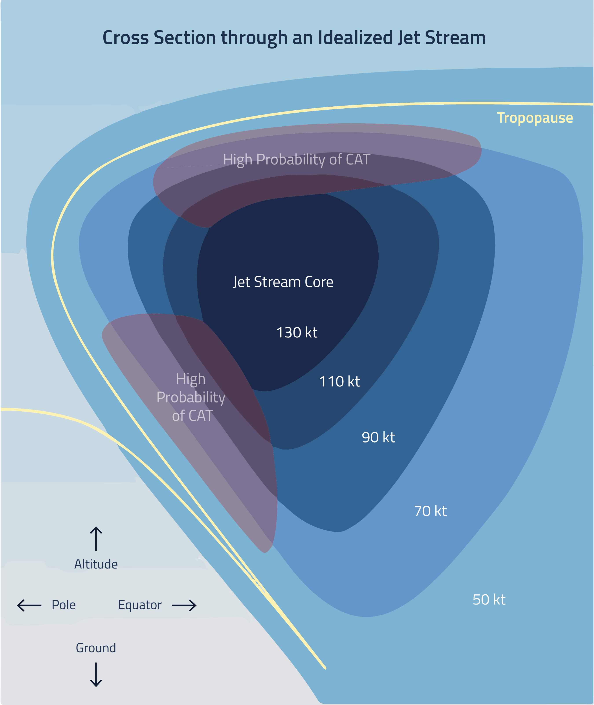
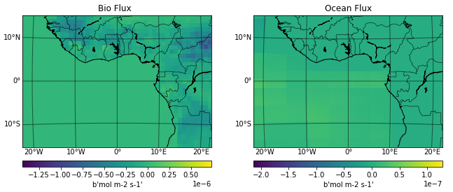

Mapping Clear-air Turbulence
“Clear-air turbulence is so named because it comes literally out of the blue,” described technologist James Bridle in his book, New Dark Age. “It occurs when bodies of air moving at wildly different speeds meet: as the winds shear against each other, vortices and chaotic movements are produced.”
The relationship between air travel and clear air turbulence is an apt metaphor for the larger challenge that is climate change. While air travel continues to contribute to carbon dioxide and nitrogen oxide emissions, the increased levels of carbon dioxide in the atmosphere has led to increased levels of turbulence that passengers do not see coming and that inevitably slows down air travel.
Nearly a decade ago, scientists studying clear-air turbulence showed that in winter, the strength of turbulence and the frequency of “moderate-or-greater turbulence” increased significantly when the concentration of carbon dioxide was doubled. The scientists stated that their results “suggest that climate change will lead to bumpier transatlantic flights by the middle of this century.”
Get ready for a bumpy ride
Flight paths between airports compared to CO2 emissions by country
CO2 Emitting Countries
Clear-air turbulence or CAT occurs in patches above 15,000 feet and is generally around 2,000 feet deep, 20 miles wide and 50 miles long according to the National Weather Service. When pilots begin to encounter turbulence, they are recommended to slow down the aircraft and notify the crew and passengers to fasten seat belts. Since 2017, there have been at least eighteen significant flight accidents attributed to clear-air turbulence.
In the most dramatic example of CAT from the past, in 1997 a flight from Tokyo to Hawaii hit clear air turbulence and several passengers and crew members were injured and one passenger died as a result. According to the National Transportation Safety Board report, none of the severely injured parties were wearing a seatbelt.
Source: National Weather Service
According to the map above, the eastern part of China could see more clear-air turbulence on flights given the significant air traffic and the country's heavy CO2 emissions. Similarly, on the East Coast of the U.S. international flights from cities such as New York, Boston, and Atlanta could experience more clear-air turbulence.

While many countries emit far less C02 than others. There are still hotspots less reflected in the map above. NOAA measures CO2 emissions in the atmosphere across land masses and the oceans with their Carbon Tracker. The two maps below are measurements of average concentration of C02 in Western Africa in 2019.
Source: NOAA Carbon Tracker of 2019 data
Additionally, when compared with countries like China, U.S., and India, countries in Europe emit far less CO2, however there is significant air traffic and cumulatively could be a potential cause of clear-air turbulence.